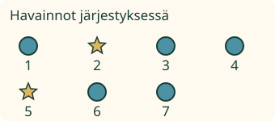
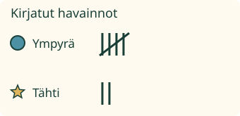

Aava kirjaa, millaisia merkkejä postilapuissa on. Jokaisen lapun pitää päästä mukaan.
Yksi havainto, yksi kirjaus
Merkitsen jokaisen havainnon oikealle riville. Rivit on annettu: ympyrä ja tähti. Vertaa lapun merkkiä rivin merkkiin.

Ympyröitä on 5, tähtiä 2. Yksi viiva tarkoittaa yhtä havaintoa. Viides viiva vedetään neljän pystyviivan yli.

Ilman moduulia: piirrä kaksi riviä, ympyrälle ja tähdelle. Käy yllä olevat seitsemän havaintoa läpi ja tee jokaisesta yksi viiva oikealle riville.
Korjaa vain puuttuva
Toisessa listassa on 3 tähteä, mutta tähtiriville tuli vain 2 merkintää. Lisää puuttuva havainto tähtiriville. Älä muuta ympyröiden kirjauksia.
Ennusta: jos yksi ympyrä kirjataan tähdeksi ja yksi tähti ympyräksi, riittääkö pelkkien yhteismäärien tarkistus?
Katso ajatus
Ei. Määrät voivat näyttää oikeilta, vaikka kaksi havaintoa on väärillä riveillä. Vertaa jokaista havaintoa sen omaan kirjaukseen.
Sama tapa uusille lapuille
Uusissa lapuissa on tähti, tähti, ympyrä, tähti ja ympyrä. Kirjaa ne samalla tavalla. Tähtiriville tulee 3, ympyräriville 2.
Apua
Katso yksi havainto kerrallaan ja valitse sen merkin mukainen rivi. Havaintonumero auttaa löytämään saman lapun. Listaa saa katsoa uudelleen. Mallikirjaus näyttää yhden tavan; sitä ei tarvitse katsoa ennen vastaamista.
Ympyrän ja tähden nimet voi lukea aikuinen. Muotojen nimiä tai ääneen vastaamista ei kysytä.
Tutki lisää ilman ruutua
Tee omat kaksi rivimerkkiä. Kerää pieni lista paperilappujen merkeistä. Kirjaa yksi merkki kerrallaan ja tarkista lopuksi listaa vasten. Jos toisenlaisia merkkejä ei ollut yhtään, niiden määrä on 0. Kirjaamatta jäänyt havainto on eri asia kuin nolla.
Opettajalle: tarkoitus ja rajat
Vuosiluokat 1–2, concept/atomic; lähdepohja pedagogically_derived. Tarkka vaadittu JA-ryhmä on M-DATA-01 ja M-NUM-03. Luokat annetaan valmiina, eikä muotojen nimeämistä, puhetta, ylimääräistä laskutaputusta tai nopeutta arvioida. Tämä on kuvitteellinen merkkilista, ei väite tehdyistä luontohavainnoista.
Jokaisella lähdehavainnolla on pysyvä tunnus. Oppija kirjaa jokaisen luokan itse. Tarkistus katsoo sekä tunnusten kattavuuden että oikean rivin; pelkät loppusummat eivät riitä. Samantyyppiset toistuvat havainnot ovat eri tapahtumia. Kirjausrivien katselujärjestys saa vaihtua. Viivakuvat johdetaan nykyisistä kirjauksista; viides merkki on ryhmän viides, ei kuudes.
Mallikirjaus on erillinen apu, 0,9 sekuntia havaintoa kohden. Sen katsominen ei muuta oppijan kirjauksia tai kelvollista palautetta. Muokattu kirjaus palauttaa tarkistuksen neutraaliksi. Sivun tuettu kirjaus ei osoita itsenäistä todellisten havaintojen tekemistä, muistamista tai pysyvää hallintaa. Ei henkilöhistoriaa, formaalia hallintamerkintää tai vaikuttavuusväitettä. Täyttä ei-visuaalista arviota ei ole tehty.
Lopuksi: miten löydät havainnon, jolta merkintä puuttuu?
 Aava kirjaa, millaisia merkkejä postilapuissa on. Jokaisen lapun pitää päästä mukaan.
Aava kirjaa, millaisia merkkejä postilapuissa on. Jokaisen lapun pitää päästä mukaan.